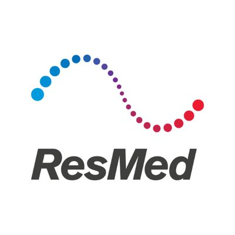

Clients & Organizations



Senior Engineering Leader with 20+ years of experience building scalable systems, leading global engineering teams, and driving enterprise transformation.
Built and delivered platforms across 20+ countries, collaborating globally across Asia, Europe, North America, South America, and Africa.
Strong foundation in enterprise systems and global delivery.
Service-based architectures and web systems.
Digital transformation and modern architectures.
Led large-scale enterprise platforms and teams.
Global transformation programs and architecture leadership.
Platform engineering, energy systems, and AI-enabled solutions.
From hands-on engineering to strategic leadership — evolving across roles, scale, and impact.
My engineering journey closely mirrors the evolution of the .NET ecosystem — growing from early desktop-centric frameworks to modern, cloud-native platforms.
I started working with .NET 1.1 during the early days of enterprise application development. The focus was on Windows-based applications and tightly coupled architectures.
With .NET 2.0, we saw significant improvements — generics, better memory management, and enhanced performance. However, systems began growing in complexity.
.NET 3.0 introduced WPF, WCF, and WF — expanding capabilities significantly. However, adoption was cautious due to complexity and rapid evolution.
.NET 3.5 gained strong traction, especially with the introduction of LINQ, making data handling more intuitive and powerful.
With .NET 4 and 4.5, enterprise systems scaled significantly. Async programming models improved responsiveness and performance.
As systems evolved towards distributed architectures, limitations of the traditional .NET framework became evident: platform dependency, heavy runtime, and limited cloud-native support.
The introduction of .NET Core was a turning point — bringing cross-platform capabilities, lightweight runtimes, and cloud-native development.
With .NET 6 and 7, the ecosystem became unified, faster, and more aligned with modern engineering needs.
Each version of .NET solved critical problems of its time — but also introduced new challenges. The real learning was not just adopting the framework, but understanding when and how to use it effectively.
From tightly coupled Windows applications to cloud-native distributed systems — this journey shaped my approach to architecture: context-driven, scalable, and future-ready.
My journey reflects a continuous progression from building individual components to designing and leading complex, large-scale systems and engineering organizations.
Focused on building core application components, writing efficient code, and understanding system fundamentals. Worked on desktop applications, device integrations, and early enterprise systems, developing strong foundations in programming, OS-level interactions, and performance optimization.
Expanded scope to designing modules and services. Contributed to service-based architectures, web services (Java/.NET), and early distributed systems. Focused on code quality, reusability, and integration between systems.
Hands on end-to-end delivery of features and systems. Led small teams, drove design decisions, and ensured alignment between business requirements and technical solutions. Worked extensively on API design, system integration, and performance tuning.
Designed scalable system architectures across domains. Led transition from monolithic to service-based and microservices architectures. Focused on system design, trade-offs, scalability, and reliability. Introduced patterns for distributed systems, data flow, and platform thinking.
Led multiple teams and large-scale platforms. Owned architecture, delivery, and operational excellence. Drove cloud transformation, platform engineering, and system modernization. Balanced technical depth with execution and stakeholder alignment.
Driving engineering excellence at organizational level. Responsible for platform strategy, architecture governance, and building high-performing engineering teams. Focused on system thinking, cross-domain architecture, AI-enabled systems, and aligning technology decisions with business outcomes.

Leading platform engineering and energy management systems at global scale.
Delivered transformation programs across global enterprises.
Scaled enterprise systems and led distributed engineering teams.
Built modern digital platforms and cloud-native systems.
Developed service-oriented architectures and enterprise applications.
Established strong foundation in enterprise software engineering.
Worked with stakeholders across Asia, Europe, North America, South America, Australia Canada and Africa, driving global engineering and stakeholder alignment.